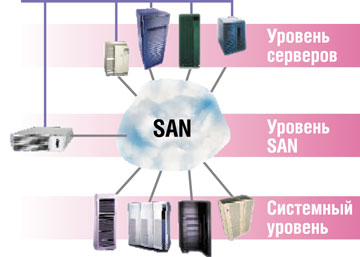
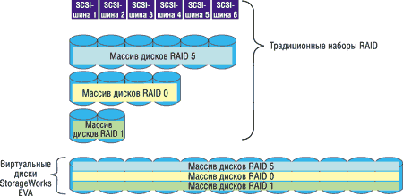
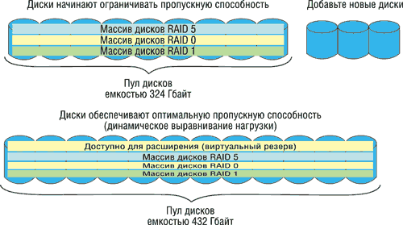
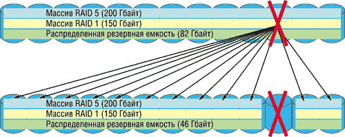

Андрей Борзенко
Многие компании продолжают сталкиваться с проблемами хранения информации, характерными для современного бизнеса. Среди трудностей, с которыми практически ежедневно имеют дело сотрудники ИТ-служб, можно отметить: расходы, связанные с закупкой дополнительных дисков; затраты на расширение площадей при росте систем хранения данных и всей среды; время, затрачиваемое на ввод новых дисков в эксплуатацию; административные издержки, связанные с процессом выделения требуемых емкостей хранения; необходимость использования квалифицированных кадров для организации процесса управления хранилищем данных; растущие требования к интеграции данных в среде с оборудованием различных производителей. Все эти проблемы можно свести к таким ключевым параметрам, как время, затраты (ресурсы) и доступное пространство системы хранения данных.
Для хранения больших объемов критичной для бизнеса информации применение находят несколько технологий, среди которых можно отметить RAID, резервное копирование на магнитную ленту и высокоскоростные сетевые архитектуры SAN (Storage Area Network). Потребность в более эффективных решениях стала насущной задачей современного бизнеса. Одним из наиболее перспективных направлений в данной области считается построение сетевых систем хранения с использованием методов виртуализации.
Новые дисковые массивы StorageWorks Enterprise Virtual Array (EVA) Compaq (http://www.compaq.ru), специально разработанные для открытых систем и рассчитанные в первую очередь на крупных корпоративных клиентов, закрыли ранее пустовавшую в продуктовой линейке корпорации нишу высокопроизводительных систем. Виртуализация используется на всех уровнях этих SAN, но наиболее полно она применяется на системном уровне.
Данное семейство продуктов - это первое поколение дисковых систем StorageWorks, построенных целиком на основе Fibre Channel (FC) с использованием технологии VersaStor для формирования виртуальных дисковых RAID-массивов. Реализуя эту технологию на уровне контроллера, новые системы способны обеспечить формирование больших пулов, характеризующихся простотой управления, высокой эффективностью использования дискового пространства и мощными средствами репликации данных.
Дублированные контроллеры с зеркалированной кэш-памятью формируют пулы дисков и поддерживают альтернативные пути доступа ко всем устройствам, обеспечивая отсутствие единичных точек отказа. Отличительные особенности новой системы - простота управления, высокая эффективность использования дискового пространства и мощные средства репликации данных и обеспечения "непрерывающего" резервного копирования с помощью клонов и "мгновенных снимков" (snaphot) логических томов. В частности, технология динамического создания виртуальных пулов помогает сэкономить дисковое пространство и улучшить эффективность использования емкости дисков. Ресурсосберегающая технология виртуальной репликации характеризуется значительно большей эффективностью по стоимости мегабайта дискового пространства по сравнению с традиционными решениями в этой области.
Мгновенная репликация данных позволяет в считанные секунды получить "снимок" состояния системы и перезапустить приложение. Данная технология дает значительную экономию дискового пространства и улучшает эффективность использования дисков.
Виртуальное мгновенное клонирование обеспечивает получение копии данных, подобное обычному клонированию, но копия создается мгновенно, и ею можно тут же воспользоваться как "мгновенным снимком", поскольку копирование с одного логического тома на другой происходит в фоновом режиме. После того как все данные скопированы, клон отсоединяется от основного тома и может использоваться в процессе резервного копирования данных на ленту, для тестирования новых версий приложений, служить резервной копией данных и т. д. Освободившееся после копирования устройство также можно использовать в качестве платформы для тестов или средства резервного копирования данных на ленту.
Разработчики подчеркивают, что StorageWorks EVA позволяет преодолеть ограничения традиционных систем хранения по таким показателям, как занимаемая площадь, стоимость и простота развертывания. Новый массив дополняет и расширяет существующее семейство модульных дисковых массивов StorageWorks Modular Array (MA8000, EMA12000, EMA16000) и может работать совместно с другим оборудованием аналогичного назначения в пределах сетевых систем хранения на основе архитектуры Open Fibre Channel SAN. Массив в первую очередь предназначен для организаций, нуждающихся в улучшении масштабируемости и эффективности использования дискового пространства систем хранения данных, заинтересованных в поддержании высокой пропускной способности при выполнении сложных транзакций с интенсивными операциями ввода-вывода, в упрощении администрирования и сокращении времени на резервное копирование и восстановление данных.
Первоначально данный продукт поставляется в трех конфигурациях, размещаемых в стандартных стойках высотой 42U. Конфигурации оптимизированы для применения в среде большинства коммерческих предприятий и в компьютерных центрах, специализирующихся на высокопроизводительных вычислениях для технического применения. Эти решения совместимы с наиболее популярными ОС различных производителей и отличаются высокой степенью готовности. В будущем появится возможность приобретать заказные конфигурации, использующие модульные элементы конструкции.
Уровни виртуализации
Суть виртуализации заключается в отделении логического представления устройств от физического размещения данных, что позволяет преодолеть физические ограничения традиционных RAID-массивов. Виртуальные диски, предоставляемые серверам в качестве логических томов, формируются из пулов дисков, которые по мере необходимости можно расширять путем добавления новых, при этом данные распределяются по всем дисковым накопителям, повышая быстродействие.
Виртуальные системы хранения данных устраняют непосредственные отношения между самими системами хранения и серверами, при этом физические дисковые устройства и средства распределения емкости хранения между ними становятся прозрачными для серверов и прикладных программ. Говоря о структуре сетевой среды хранения данных, использующей виртуализацию, можно выделить три основных уровня: уровень серверов, уровень сети SAN и системный уровень (рис. 1). В каждом конкретном случае для достижения максимальной эффективности эти уровни могут использоваться как совместно, так и независимо друг от друга.
|  | Рис. 1. Уровни виртуализации.
|
Виртуализация предоставляет в распоряжение пользователей множество преимуществ, главные из которых:
- более эффективное использование доступного дискового пространства;
- упрощенное управление, высокая производительность;
- мощные средства репликации данных.
Уровень серверов
На уровне серверов виртуализация может быть осуществлена с помощью ПО, постоянно находящегося на сервере и независимого от накопителей. При помощи этого ПО операционная система заставляет сервер вести себя так, будто он связан с конкретным типом устройства хранения, хотя фактически сервер поддерживает связь с виртуальным диском. Виртуализация на уровне сервера может быть применена как внутри гомогенной SAN-среды, так и вне ее. Этот механизм характеризуется ограниченной способностью к взаимодействию с аппаратными или программными компонентами. Виртуализация на уровне сервера имеется в системе Compaq SANworks Virtual Replicator. В этом продукте виртуализация помогает организовать объединенный пул накопителей в среде Microsoft Windows 2000 и Microsoft Windows NT. Это эффективное решение для систем начального уровня, поскольку его довольно просто осуществить и использовать.
Архитектура корпоративной сети храненияАрхитектура Compaq ENSA (Enterprise Network Storage Architecture) была представлена еще в декабре 1998 г. Она обеспечивала основу для централизованно управляемого совместно используемого ресурса хранения данных с поддержкой неоднородной среды. С помощью ENSA компании могли создать пул и хранить данные в одной сети SAN, обеспечивающей соединение с любыми серверными платформами - от систем Compaq AlphaServer с ОС Tru64 UNIX до Sun Solaris и других. Такие неоднородные среды SAN, реализующие усовершенствованный доступ к данным, создают основу для развертывания решений Open SAN с объединением всех серверов и систем хранения данных в действительно открытой среде. За счет виртуализации на новом уровне ENSA создает гибкий совместно используемый ресурс, позволяя сводить огромные массивы физической памяти в единый корпоративный пул для обслуживания серверов приложений независимо от их местонахождения. Недавно Compaq представила новую версию этой архитектуры - ENSA-2, которая включает несколько технологических инноваций, ориентированных на повышение масштабируемости, виртуализации и автоматизации, упрощение, совершенствование межсетевого взаимодействия и защиту капиталовложений. |
Уровень SAN
Более широко известна виртуализация на уровне сетевой структуры. Обычно она применяется в открытых SAN-средах как с традиционными, так и с виртуализированными системами хранения. Новая технология Compaq VersaStor применяется для всех уровней сети хранения данных, включая уровень сетевой структуры SAN. VersaStor может служить основным средством асимметричного объединения накопителей в общий пул в рамках среды SAN. Эта технология виртуализации легла в основу инициативы Compaq Open SAN. Она специально разрабатывалась в качестве стандарта де-факто для виртуализации систем хранения на уровне сетевой структуры.
Системный уровень
На этом уровне виртуализация осуществляется на основе контроллеров дисковых массивов, которые работают независимо от активности основного компьютера (хоста). Контроллеры дисковых массивов поддерживают создание виртуальных дисков, мгновенных копий состояний системы и клонирование данных при взаимодействии с управляющим ПО. Централизованное управление процессом виртуализации осуществляется с помощью устройства SAN Management Appliance и Web-браузера.
Виртуализация на уровне индивидуального контроллера системы хранения - значительный шаг за пределы классической технологии RAID, способный повысить готовность данных, производительность и отказоустойчивость систем хранения, эффективность управления ими, простоту репликации данных и поддержки кластеров. Система StorageWorks EVA обеспечивает дополнительные степени свободы для заказчиков на нижнем системном уровне структуры SAN.
На этом уровне емкость накопителей как бы отделяется от их основных физических параметров, что позволяет создавать большие объединенные пулы хранения, одновременно доступные для хостов различных фирм-производителей. Эти виртуальные пулы могут быть сконфигурированы как виртуальные диски и сделаны доступными для любого хоста или для всего их множества. Заметим, что под виртуальным пулом обычно понимается группа физических дисков, объединенных в логический пул, представляющий совокупное дисковое пространство, которым можно легко управлять программно. В свою очередь, виртуальный диск - это логическое объединение физического дискового пространства данного пула. По существу, понятие виртуального диска эквивалентно понятию номера логического устройства (LUN, Logical Unit Number) в технологии SCSI. Пул системы хранения может подразделяться на виртуальные диски любого размера, не превышающего, разумеется, размеров самого пула. Такая методика позволяет достичь более эффективного использования емкости систем хранения, упростить управление и снизить общие затраты.
Повышение эффективности
Считается, что одно из самых важных преимуществ виртуализации на уровне системы накопителей - это повышение производительности. Основной вклад в улучшение эффективности дает выравнивание нагрузки посредством устранения "горячих" накопителей. "Горячий" диск - это накопитель, испытывающий значительные нагрузки вследствие того, что на нем хранятся часто используемые данные, или же вследствие особенностей конкретной реализации RAID-массива. В таких условиях виртуализация обеспечивает значительный прирост производительности, позволяя рассредоточить данные по нескольким физическим дискам. Она устраняет необходимость организовывать диски в традиционные массивы, подобранные по емкости дисков и типу защиты RAID.
Виртуальный диск заданной емкости создается на основе доступного пула накопителей. Система StorageWorks EVA способна в рамках единого пула поддерживать несколько виртуальных дисков варьируемой емкости, а также различные типы RAID. Кроме того, емкость виртуальных дисков пула образуется из емкости всех физических дисков, составляющих данный пул.
Например, для создания традиционной конфигурации RAID 1 ("зеркалирование") емкостью 36 Гбайт в нее включаются два диска по 36 Гбайт (рис. 2). Поэтому при считывании или записи данных в операциях задействованы только два диска, что ограничивает производительность всей системы. С использованием виртуализации тот же самый массив RAID 1 емкостью 36 Гбайт может быть создан на основе 4, 6, 8 или более дисков, входящих в пул. Значительный выигрыш в производительности достигается благодаря тому, что в передаче данных одновременно участвует большее число дисков.
|  |
| Рис. 2. Гибкость виртуальных дисков.
|
В случае изменения данных на виртуальном диске или структуры пула виртуализация позволяет перераспределить данные по нескольким физическим дискам, входящим в этот пул, в результате чего массив StorageWorks EVA способен "на лету" задействовать алгоритм выравнивания производительности, не снижая эффективности выполнения текущих операций. Этот процесс позволяет достичь однородного распределения блоков логического виртуального диска по такому числу физических дисков, которое позволяет реализовать тип избыточности, примененный в данном виртуальном диске. Процесс выравнивания запускается в момент, когда массив StorageWorks EVA регистрирует возможность повысить эффективность использования дисков, например, в случае изменения числа дисков в пуле.
Управление
Упрощенное управление накопителями - еще одно значительное преимущество виртуализации на системном уровне; оно позволяет администраторам оперировать атрибутами системы хранения, а не составляющими ее физическими объектами. Благодаря виртуализации пользователь может создавать для своих систем хранения данных единую модель управления, не принимая во внимание тип RAID и тем самым избавляясь от работ по физическому размещению данных. Такой подход упрощает развертывание системы хранения, позволяет администраторам управлять всеми накопителями как единым консолидированным пулом и переносит задачи управления с уровня индивидуальных накопителей на уровень всего пула. В качестве системы управления используется устройство SAN Management Appliance, подключенное к сетям Fibre Channel и LAN, с Web-браузером на рабочей станции системного администратора. Администраторы могут управлять всеми массивами StorageWorks EVA, задействованными в архитектуре SAN. Такая централизация управления позволяет администраторам управлять гораздо большими по объемам пулами, чем те, что обеспечивали предшествующие архитектуры.
Динамическое расширение
Возможность динамического расширения емкости виртуальных дисков без нарушения работы выполняющихся приложений значительно улучшает эффективность системы. Виртуализация позволяет следить за эффективностью использования емкости томов или всего пула накопителей и по мере необходимости выделять дополнительные ресурсы в динамическом режиме.
Например, рассмотрим виртуальный массив типа RAID 5 емкостью 50 Гбайт. По мере роста размеров пользовательских файлов их общий размер может приблизиться к предельной емкости массива. Когда это произойдет, администратор просто увеличит доступную емкость хранения данных пула, и новые ресурсы будут задействованы в динамическом режиме (рис. 3). Данная процедура может выполняться как автоматически, так и вручную. При возникновении ошибки выделения свободных ресурсов хранения виртуальный диск увеличивает свои размеры, а существующие данные перераспределяются по всем дисководам, входящим в данный пул.
|  |
| Рис. 3. Динамическое расширение.
|
Возможность по желанию пользователя увеличивать (но не уменьшать) размер виртуального диска (в зависимости от наличия свободного дискового пространства в пуле) повышает эффективность использования емкости носителей - как за счет устранения ограничений на доступный размер емкости хранения, так и благодаря перераспределению данных по мере роста пула.
Распределенное резервирование
Распределенное, или виртуальное, резервирование дискового пространства сокращает время восстановления информации в массиве. В результате снижается уязвимость данных при отказе диска. В традиционных архитектурах администраторы систем хранения данных должны выделять специализированный "горячий" резерв на случай отказа дисковода, а массив StorageWorks EVA просто перераспределяет общее резервное пространство - точно так же, как при выделении специального "горячего" резерва. Но в этом случае задействуется несколько физических дисков. Это позволяет размещать данные на каждом физическом диске, дополнительно повышая эффективность выравнивания нагрузки при операциях ввода-вывода.
Наиболее очевидное преимущество такого использования резервной емкости - сокращение времени восстановления в случае отказа диска. Поскольку данные распределены по нескольким физическим дискам, массив StorageWorks EVA способен быстрее восстановить данные - благодаря тому, что в организации доступа к данным участвует большее число дисков (рис. 4).
|  |
| Рис. 4. Распределенное резервирование.
|
Управляющее ПО можно использовать для выделения дискового пространства на оптимальном числе накопителей в пуле в зависимости от приложения. Это резервное пространство используется для восстановления информации в сегментах виртуального диска, пострадавших из-за отказа физического диска. При отказе диска массив StorageWorks EVA в фоновом режиме инициирует процесс восстановления данных RAID 1 или RAID 5 на резервном пространстве пула. Если виртуальный диск на основе архитектуры RAID 0 имеет на диске блоки, сигнализирующие о возможном отказе, данные с этого диска будут скопированы в резервное дисковое пространство. Однако если произошел реальный отказ диска, данные в массиве RAID 0 окажутся полностью утраченными. Распределенное резервирование использует алгоритмы, подобные методам выравнивания нагрузки, с тем отличием, что в данном случае цель состоит в эвакуации данных со сбойного диска, а не в оптимизации его нагрузки за счет других дисков пула.
Средства репликации данных
Контроллер массива StorageWorks EVA дает возможность использовать три типа средств репликации данных: традиционные копии текущего состояния (snapshot), копии состояния с виртуальным использованием дискового пространства (Virtually Capacity-Free Snapshot) и мгновенные клоны текущего состояния (Virtually Instantaneous Snapclone).
Традиционные копии текущего состояния
В этой схеме подразумевается, что выделенный размер дискового пространства равен размеру исходного резервируемого объема. Данные в резервный раздел записываются только по мере необходимости, иными словами, обновление данных там происходит при изменении данных в исходном виртуальном диске. При этом даже если используется далеко не все пространство резервного раздела, оно должно быть исключено из общего пула хранения.
Виртуальное использование дискового пространства
В рамках метода резервирования Virtually Capacity-Free Snapshot система хранения не предотвращает доступ к выделенному дисковому пространству. Наоборот, это пространство начинает использоваться для резервирования только по мере изменения данных исходного виртуального диска. Таким образом, резервная область является новым виртуальным диском, который первоначально находится в общем пуле. По мере размещения данных на оригинальном виртуальном диске соответственно выделяется свободное пространство для сохранения копий его текущего состояния.
Как при традиционном резервировании, так и в случае Virtually Capacity-Free Snapshot неразделяемые сегменты емкости хранения используются по мере записи новых данных. Различие состоит в том, что в стандартной процедуре заблаговременно выделяется дисковое пространство, требуемое для выполнения операций резервирования, а в случае Virtually Capacity-Free Snapshots дисковое пространство выделяется только по мере необходимости и одновременно прекращается совместное использование сегментов общего дискового пространства. Поскольку исходные виртуальные диски и резервные виртуальные диски разделяют общее пространство для хранения сходных сегментов блоков данных, эта форма выполнения резервирования называется резервированием состояния системы с виртуальным использованием дискового пространства. В остальном эти два метода идентичны. Здесь важно отметить, что копирование состояния с виртуальным использованием дискового пространства в массиве StorageWorks EVA может выполняться при любом уровне избыточности (RAID 0, 1, 5).
Виртуальное мгновенное клонирование
Virtually Instantaneous Snapclone - усовершенствованный метод клонирования данных, сходный с традиционным клонированием: для создания копии выделяется определенный объем дискового пространства. Скорость создания полной копии оригинального виртуального диска ограничена лишь пропускной способностью дисковых систем. Таким образом, на получение двух идентичных независимых копий данных тратится минимальное время.
Между традиционным клонированием данных и методом Virtually Instantaneous Snapclone имеется одно важное различие. В первом случае копия недоступна до момента окончания процесса клонирования; во втором - скопированные данные становятся доступными мгновенно. В процессе создания копии методом Virtually Instantaneous Snapclone контроллеру обеспечивается доступ к оригинальному виртуальному диску, и он отслеживает все изменения данных с момента запуска процедуры клонирования. В этом случае пользователь имеет то преимущество, что он может фактически мгновенно получить копию данных определенного состояния системы.
В целом метод Virtually Instantaneous Snapclone - это оптимальное средство для создания копии, рассчитанной на долговременное хранение или для получения нескольких копий диска, в то время как традиционное копирование состояния или копирование с виртуальным использованием дискового пространства (capacity-free) более подходит для получения временных и резервных копий.
Особенности StorageWorks EVA
Как уже отмечалось, система базируется на технологии Fibre Channel (FC): использует FC-контроллеры и FC-диски (dual-loop FC) с пропускной способностью 2 Гбит/с. Контроллер системы способен работать в среде SAN на скоростях как 2 Гбит/с, так и 1 Гбит/с. Однако воспользоваться преимуществами высокоскоростной связи с сервером можно лишь при условии, что весь маршрут прохождения данных соответствует требованиям широкой полосы пропускания. Это, в частности, относится к адаптерам главной шины (Host Bus Adapter, HBA) и коммутаторам.
Одна пара контроллеров системы StorageWorks EVA обеспечивает поддержку до 240 FC-дисков. Здесь могут использоваться накопители емкостью 36 и 72 Гбайт со скоростью вращения шпинделя 10 тыс. об./мин. Устройства HSV110 могут поддерживать работу до 240 FC-дисков, но в одну стойку высотой 42U можно поместить только 168 накопителей. Первые модели системы выпускаются в максимальной стандартной конфигурации для стоек 42U. Конфигурация рассчитана на 168 дисков, располагаемых в двенадцати объединительных кожухах. В начале 2002 г. Compaq дополняет систему стойкой расширения, позволяющей нарастить общую емкость системы до 240 дисков.
Система использует модульный дизайн и для сетевых компонентов. Конструктивные блоки для размещения дисков имеют высоту 3U и специально рассчитаны для размещения FC-дисков. Пара конструктивно независимых контроллеров также занимает в стойке место высотой 3U.
За счет использования конструкции с высокой плотностью размещения компонентов и поддержки большего числа дисков на одну пару контроллеров обеспечивается значительное снижение издержек и занимаемой площади: на площади примерно 0,5 м2 можно разместить до 12 Тбайт дискового пространства (168 дисков емкостью 72 Гбайт).
Для конфигурации системы и управления массивом StorageWorks EVA служит ПО HSV Element Manager, входящее в комплект с устройством SAN Management Appliance. Низкая совокупная стоимость владения достигается благодаря простым и эффективным средствам управления системой на основе Web. Кроме того, программные средства управления системой позволяют заказчикам управлять более крупными конфигурациями SAN с большим числом серверов и пулами накопителей большего размера. Первые модели нового семейства поддерживают ОС Microsoft Windows NT, Windows 2000, Sun Solaris, Tru64 UNIX и OpenVMS.
Эксперты отмечают два главных преимущества StorageWorks EVA по сравнению с конкурирующими продуктами. Это, во-первых, аппаратная поддержка механизмов виртуализации и, во-вторых, большая масштабируемость при меньшей стоимости базовых моделей.